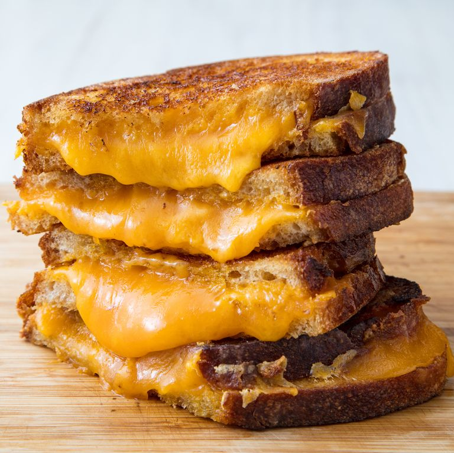

Grilled Cheese

It's all about the crust. Choose a hearty bread, butter it up, and shred your favorite cheddar for the best grilled cheese ever!
crispy-crunchy on the outside, melty, cheddar middle, and the world's most impressive cheese pull.
Ingredients
- 5 tbsp. butter, softened, divided
- 4 slices sourdough bread
- 2 c.shredded cheddar
Directions:
- Spread 1 tablespoon butter on one side of each slice of bread. With butter side down, top each slice of bread with about ½ cup cheddar.
- n a skillet over medium heat, melt 1 tablespoon butter. Add two slices of bread, butter side down. Cook until bread is golden and cheese is starting to melt, about 2 minutes. Flip one piece of bread on top of the other and continue to cook until cheese is melty, about 30 seconds more.
- Repeat for the second sandwich, wiping skillet clean if necessary.